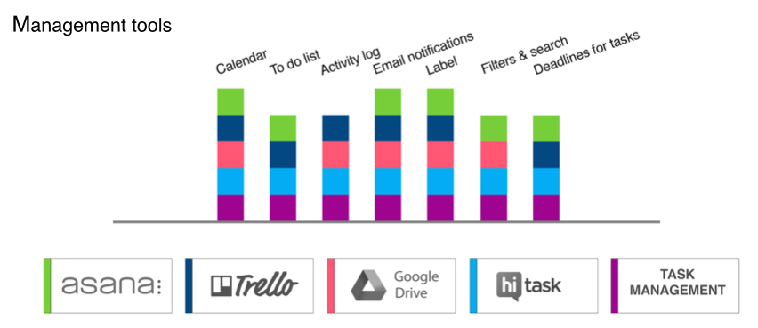
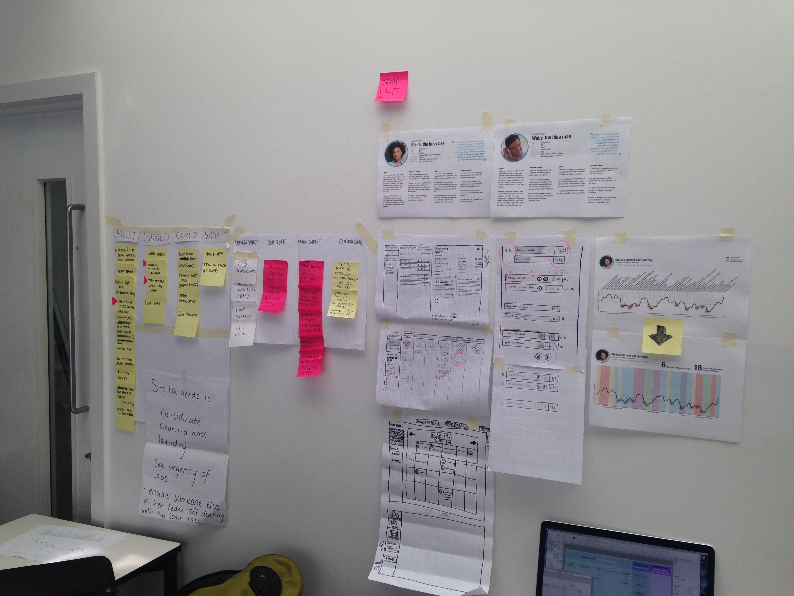
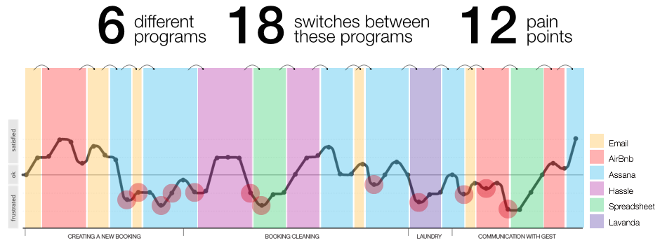
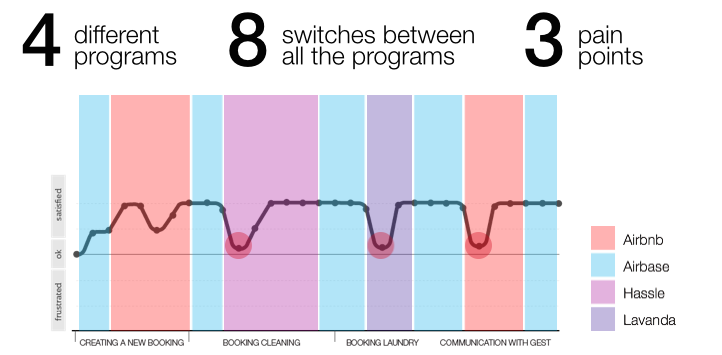

Hi. I’m Ellie.
I design user experiences.
That means I’ve thought a lot about your visit today.
I’m glad you’re here and I want you to stick around.
I know you’ll leave, but before you do I want to share some ideas with you.
Internal dashboards are great, aren't they?
Project brief: Create an internal dashboard for the AirSorted team to manage the cleaning and laundry for their properties and to complete the different tasks in order of priority
Target device: Desktop/Laptop
Duration: 2.5 weeks
My role: Creating the survey, carrying out interviews, contextual enquiry, sketching and ideation, running design studios, paper prototypes, digital wireframes, usability testing
The problem
AirSorted were using 6 different platforms to manage a single booking. This was time consuming and relied on verbal communication to make sure team members weren’t simultaneously working on the same booking.
Discovery and research
We began our research by carrying out a competitive
analysis of other property management companies as well
as management tools.

We then sent out a survey based on the management of a process from start to finish. We analysed the responses of the 122 respondents and carried out 6 interviews. We interviewed a variety of people including taxi companies, a printing company, and a picture framing company. These interviews helped us to establish how other businesses are managing similar processes to AirSorted. Having carried out this research, we carried out a contextual enquiry to look at AirSorted’s booking management process in detail. Two personas were created to represent the main users. We were then able to create user flows and a user journey which helped us to establish the pain points that needed to be addressed, as well as which features were the most relevant for the AirSorted team to have in their dashboard.
Design
In the ideation phase, we ran design studios with
AirSorted and within our team.

Various different ways of displaying information were withdrawn and a
comprehensive feature list was created. We created a
MoSCoW board to help prioritise the potential features
based on the user research and the business needs. Once
we had our final feature list, we created paper
prototypes and tested them.
Pin up
Testing revealed certain pain points which we were able to resolve and test again. We then created digital wireframes and put these into a clickable prototype for testing. We created a user journey for the new process in order to visualise the progression from the previous user journey and then visual design was the final stage. A style tile was created for the skinned mockups.
The Solution
An internal dashboard (named Airbase) was created. The dashboard enabled the properties and bookings to be managed from one platform. Airbase also included a team page displaying which bookings each team member was working on and a stats page displaying the business metrics over time.
From this
To this